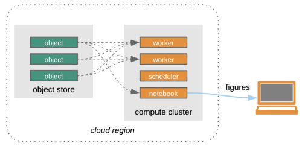

import getpass
import textwrap
from cmr.search import collection as cmr_collection
from cmr.search import granule
from cmr.auth import token
from cmr_auth import CMRAuth
# NON_AWS collections are hosted at the NSIDC DAAC data center
# AWS_CLOUD collections are hosted at AWS S3 us-west-2
NSIDC_PROVIDERS = {
'NSIDC_HOSTED': 'NSIDC_ECS',
'AWS_HOSTED':'NSIDC_CPRD'
}
# Use your own EDL username
USER = 'betolink'
print('Enter your NASA Earthdata login password:')
password = getpass.getpass()
# This helper class will handle credentials with CMR
CMR_auth = CMRAuth(USER, password)
# Token to search preliminary collections on CMR
cmr_token = CMR_auth.get_token()Accessing NSIDC Cloud Collections Using CMR
Programmatic access of NSIDC data can happen in 2 ways:
Search -> Download -> Process -> ResearchSearch -> Process in the cloud -> Research
Credit: Open Architecture for scalable cloud-based data analytics. From Abernathey, Ryan (2020): Data Access Modes in Science.
The big picture:
There is nothing wrong with downloading data to our local machine but that can get complicated or even impossible if a dataset is too large. For this reason NSIDC along with other NASA data centers started to collocate or migrate their dataset holdings to the cloud.
Steps
- Authenticate with the NASA Earthdata Login API (EDL).
- Search granules/collections using a CMR client that supports authentication
- Parse CMR responses and get AWS S3 URLs
- Access the data granules using temporary AWS credentials given by the NSIDC cloud credentials endpoint
Data used:
- ICESat-2 ATL03: This data set contains height above the WGS 84 ellipsoid (ITRF2014 reference frame), latitude, longitude, and time for all photons.
Requirements
- NASA Eartdata Login (EDL) credentials
- python libraries:
- h5py
- matplotlib
- xarray
- s3fs
- python-cmr
- cmr helpers: included in this notebook
Querying CMR for NSIDC data in the cloud
Most collections at NSIDC have not being migrated to the cloud and can be found using CMR with no authentication at all. Here is a simple example for altimeter data (ATL03) coming from the ICESat-2 mission. First we’ll search the regular collection and then we’ll do the same using the cloud collection.
Note: This notebook uses CMR to search and locate the data granules, this is not the only workflow for data access and discovery.
- HarmonyPy: Uses Harmony the NASA API to search, subset and transform the data in the cloud.
- cmr-stac: A “static” metadata catalog than can be read by Intake oand other client libraries to optimize the access of files in the cloud.
Cloud Collections
Some NSIDC cloud collections are not yet, which means that temporarily you’ll have to request access emailing nsidc@nsidc.org so your Eartdata login is in the authorized list for early users.
# The query object uses a simple python dictionary
query = {'short_name':'ATL03',
'token': cmr_token,
'provider': NSIDC_PROVIDERS['AWS_HOSTED']}
collections = cmr_collection.search(query)
for collection in collections[0:3]:
wrapped_abstract = '\n'.join(textwrap.wrap(f"Abstract: {collection['umm']['Abstract']}", 80)) + '\n'
print(f"concept-id: {collection['meta']['concept-id']}\n" +
f"Title: {collection['umm']['EntryTitle']}\n" +
wrapped_abstract)Searching for data granules in the cloud with CMR
CMR uses different collection id’s for datasets in the cloud.
# now that we have the concept-id for our ATL03 in the cloud we do the same thing we did with ATL03 hosted at
from cmr_serializer import QueryResult
# NSIDC but using the cloud concept-id
# Jeneau ice sheet
query = {'concept-id': 'C2027878642-NSIDC_CPRD',
'token': cmr_token,
'bounding_box': '-135.1977,58.3325,-133.3410,58.9839'}
# Querying for ATL03 v3 using its concept-id and a bounding box
results = granule.search(query, limit=1000)
granules = QueryResult(results).items()
print(f"Total granules found: {len(results)} \n")
# Print the first 3 granules
for g in granules[0:3]:
display(g)
# You can use: print(g) for the regular text representation.NOTE: Not all the data granules for NSIDC datasets have been migrated to S3. This might result in different counts between the NSIDC hosted data collections and the ones in AWS S3
# We can list the s3 links but
for g in granules:
for link in g.data_links():
print(link)We note that our RelatedLinks array now contain links to AWS S3, these are the direct URIs for our data granules in the AWS us-west-2 region.
Data Access using AWS S3
- IMPORTANT: This section will only work if this notebook is running on the AWS us-west-2 zone
There is more than one way of accessing data on AWS S3, either downloading it to your local machine using the official client library or using a python library.
Performance tip: using the HTTPS URLs will decrease the access performance since these links have to internally be processed by AWS’s content delivery system (CloudFront). To get a better performance we should access the S3:// URLs with BOTO3 or a high level S3 enabled library (i.e. S3FS)
Related links: * HDF in the Cloud challenges and solutions for scientific data * Cloud Storage (Amazon S3) HDF5 Connector
import s3fs
import h5py
import xarray as xr
import numpy as np
import matplotlib.pyplot as plt
import cartopy.crs as ccrs
import cartopy.feature as cfeature# READ only temporary credentials
# This credentials only last 1 hour.
s3_cred = CMR_auth.get_s3_credentials()
s3_fs = s3fs.S3FileSystem(key=s3_cred['accessKeyId'],
secret=s3_cred['secretAccessKey'],
token=s3_cred['sessionToken'])
# Now you could grab S3 links to your cloud instance (EC2, Hub etc) using:
# s3_fs.get('s3://SOME_LOCATION/ATL03_20181015124359_02580106_004_01.h5', 'test.h5')Now that we have the propper credentials in our file mapper, we can access the data within AWS us-west-2.
If we are not running this notebook in us-west-2 will get an access denied error
Using xarray to open files on S3
ATL data is complex so xarray doesn’t know how to extract the important bits out of it.
with s3_fs.open('s3://nsidc-cumulus-prod-protected/ATLAS/ATL03/004/2018/10/15/ATL03_20181015124359_02580106_004_01.h5', 'rb') as s3f:
with h5py.File(s3f, 'r') as f:
print([key for key in f.keys()])
gt1l = xr.Dataset({'height': (['x'], f['gt1l']['heights']['h_ph'][:]),
'latitude': (['x'], f['gt1l']['heights']['lat_ph'][:]),
'longitude': (['x'], f['gt1l']['heights']['lon_ph'][:]),
'dist_ph': (['x'], f['gt1l']['heights']['dist_ph_along'][:])})
gt1lPlotting the data
gt1l.height.plot()%matplotlib widget
fig, ax = plt.subplots(figsize=(14, 4))
gt1l.height.plot(ax=ax, ls='', marker='o', ms=1)
gt1l.height.rolling(x=1000, min_periods=500, center=True).mean().plot(ax=ax, c='k', lw=2)
ax.set_xlabel('Along track distance (m)', fontsize=12);
ax.set_ylabel('Photon Height (m)', fontsize=12)
ax.set_title('ICESat-2 ATL03', fontsize=14)
ax.tick_params(axis='both', which='major', labelsize=12)
subax = fig.add_axes([0.69,0.50,0.3,0.3], projection=ccrs.NorthPolarStereo())
subax.set_aspect('equal')
subax.set_extent([-180., 180., 30, 90.], ccrs.PlateCarree())
subax.add_feature(cfeature.LAND)
subax.plot(gt1l.longitude, gt1l.latitude, transform=ccrs.PlateCarree(), lw=1);
fig.savefig('test.png')
plt.show()